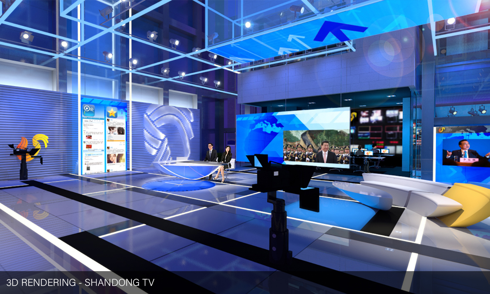
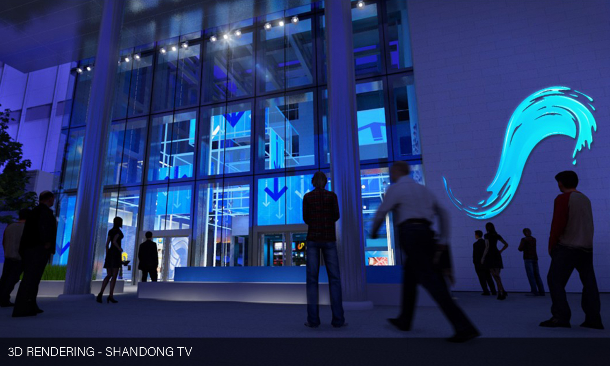
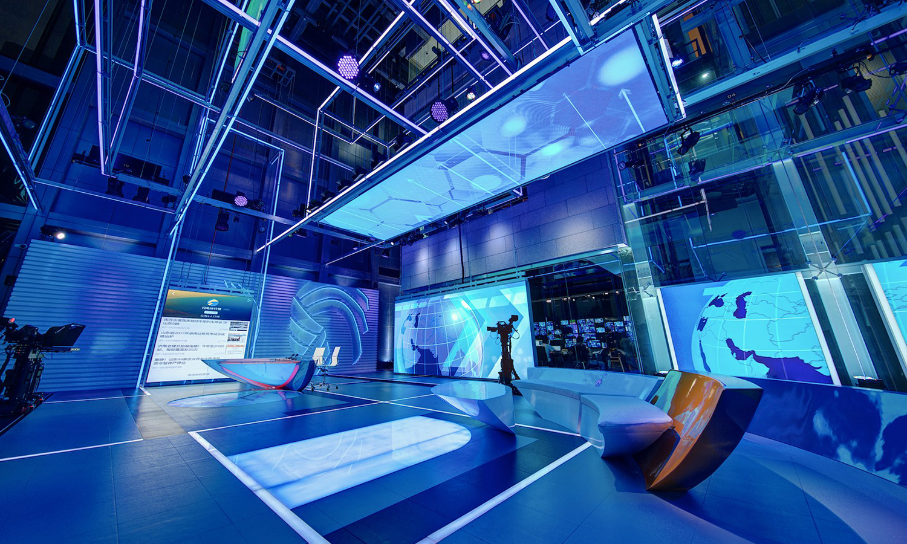
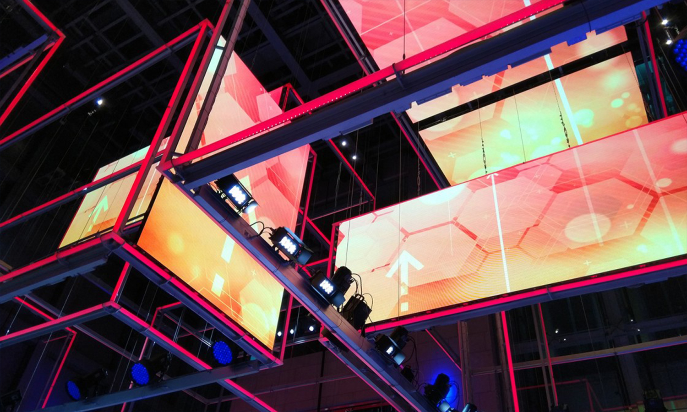

I've spent the majority of the past 5 years practicing scenic design for broadcast television, branded environments, and corporate events with the design firm Clickspring Design. The experience gained in those industries has helped to build and define my design sensibilities. Below are 3D renderings and photography of projects that I either lead or was heavily involved in. All visual content is owned by Clickspring Design and Youmans Designs respectively.
A true blend of media and built environment, the Tencent NBA studio directly aims to give the early pioneer of adopting live streaming content a formidable space to contextualize this enterprise. The main anchor area is defined by a gloss white fold that can be washed with colored LED light and features two of the studio’s main LED walls, behind and adjacent to the anchors. These expansive displays allow the anchors to compliment the live streamed content with a combination of analyses, discussions, dynamic graphics, and augmented reality, thus creating an enriched experience rather than forcing a traditional cut-to-video with anchor voice-over.


It’s not easy to get broadcast journalists to admit — on-air — that they do not know the answer to a question. But the news anchors at CNN grabbed the chance to have fun while representing their favorite charities on the CNN Quiz Show: Presidential Edition. This lively spirit inspired the set where Anderson Cooper challenged six anchor-team contestants to put their knowledge on the line in a colorful arena that featured an adaptation of the network’s iconic cubes as podiums. Warhol-inspired presidential portraits surrounding the studio allowed the show to shoot 360°. The program aired February 16 from CNN’s New York studios, with a live and loud studio audience.
To set the scene for the inaugural year of New York Comic Con’s VIP party at the Highline Ballroom, our design team drew inspiration from the iconic image of a superhero at night: perched watchfully above the city, shrouded in darkness and mystery. The event stage is imagined as a signature NYC rooftop, with its distinctive wooden water tower and gritty exhaust vents. The 2017 event was refreshed with a futuristic atmosphere, cyberpunk mood, and neon-inspired accents. Bright, layered edge-lit acrylic signage and a vivid LED display contrast sharply with the industrial stage setting, meant to recall a converted shipping container.
- 
- 
- 

- 
Taking formal cues from the converging internal structure of a towering four-story atrium, Clickspring’s latest contribution to the Chinese media market occupies what was once a sparse, street-facing building lobby. Making its debut on the Shandong TV Network, the versatile broadcast environment boasts a series of suspended and floor-mounted interlaced LED light frames engineered specifically for the project, LED video walls that raise and lower, and LED floor insets. These mutable elements accommodate dramatic shifts between daytime and primetime studio atmospheres while establishing a strong brand lexicon.
For Morning Express with Robin Meade, HLN wanted a refreshed look in Studio 7. Two large LED walls provide a large canvas that serves as a backdrop for soft seating interviews and stand-up segments. An L-shaped wall in the corner of the studio provides the perfect nook for more personal stand-ups. Studio 58 sits in the center of CNN's active newsroom. We accounted for this in the design of Primetime Justice with Ashleigh Banfield by adding two large, mobile, low-pitch LED walls. These can be rolled in and out during production. The acrylic desk lid has a pivoting fin on both ends, which allows it to accomidated up to 6 people.